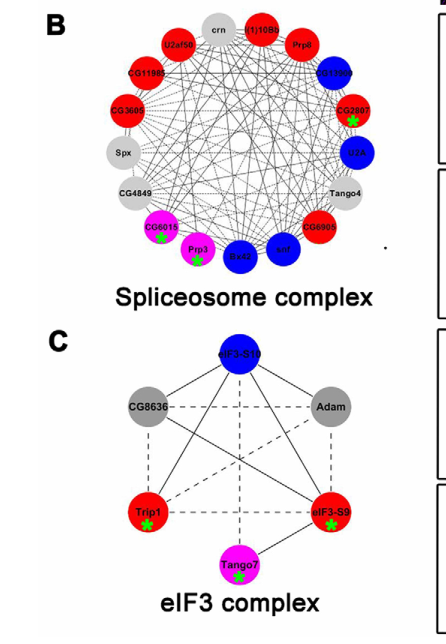

CG6051 encodes the Drosophila ortholog of human ZFYVE28/LST2 (Lateral Signaling Target protein 2), a FYVE zinc finger domain-containing protein that localizes to early endosomes via PI3P binding. Functions as a molecular adaptor in growth factor signaling, specifically in the negative regulation of EGFR signaling pathway. The protein is phosphorylated by mTORC1 and mediates feedback inhibition of receptor tyrosine kinase signaling. Contains a C-terminal FYVE domain (residues 909-969) that coordinates two zinc ions and targets the protein to endosomal membranes.
| GO Term | Evidence | Action | Reason |
|---|---|---|---|
|
GO:0042059
negative regulation of epidermal growth factor receptor signaling pathway
|
IBA
GO_REF:0000033 |
ACCEPT |
Summary: IBA annotation supported by human ortholog ZFYVE28/LST2, which acts as a negative regulator of EGFR signaling downstream of mTORC1. Strong evidence from biochemical and functional studies in mammalian systems.
Reason: This is a well-supported IBA annotation. The human ortholog ZFYVE28/LST2 has
been demonstrated to negatively regulate EGFR signaling as a substrate of
mTORC1, providing a feedback mechanism, and CG6051/Q9VB70 is explicitly listed
as the Drosophila LST2 homolog in the Battaglioni 2024 cross-species analysis.
The falcon deep research corroborates this family-level function but adds an
important caveat: there is NO direct Drosophila experiment testing EGFR
regulation by CG6051/Q9VB70, and worm/human genetics frame lst-2-family
proteins as signaling MODULATORS rather than core pathway components. The
annotation is retained as ACCEPT because it captures the best-supported,
family-conserved function, but the inference-based (rather than direct fly)
nature of the evidence should be borne in mind.
Supporting Evidence:
file:DROME/CG6051/CG6051-deep-research.md
LST2 is a substrate of mTORC1 kinase and, when active, helps inhibit the upstream EGF receptor (EGFR) signaling pathway. The absence of LST2 leads to heightened EGFR activity in mammalian cells
PMID:39141345
mTORC1 negatively feeds back on its upstream receptor EGFR via LST2.
file:DROME/CG6051/CG6051-deep-research-falcon.md
a PNAS study that provides detailed biochemical/structural/cell-biological evidence for **mammalian LST2 (ZFYVE28) as an mTORC1 substrate and a negative regulator of EGFR**, and importantly **explicitly includes the *Drosophila* homolog as UniProt Q9VB70** in cross-species analysis
file:DROME/CG6051/CG6051-deep-research-falcon.md
This supports an expert view that lst-2 family proteins function as **modulators** rather than core RTK pathway components, likely influencing signaling output via membrane/trafficking context.
|
|
GO:0031901
early endosome membrane
|
IBA
GO_REF:0000033 |
ACCEPT |
Summary: IBA annotation based on FYVE domain that specifically binds PI3P on early endosomes. FYVE domains are well-characterized endosomal targeting modules. Human ortholog LST2 localizes to endosomes.
Reason: The FYVE zinc finger domain present in CG6051 (residues 909-969) is a well-established PI3P-binding module that specifically targets proteins to early endosomal membranes. This is a defining characteristic of all FYVE domain-containing proteins. The human ortholog ZFYVE28/LST2 has been experimentally shown to localize to endosomes via its FYVE domain. The domain architecture and conservation strongly support this cellular component annotation.
Supporting Evidence:
UniProtKB:Q9VB70
ZN_FING 909..969 /note="FYVE-type"
file:DROME/CG6051/CG6051-deep-research.md
FYVE domains are known to target proteins to PI3P-enriched endosomal compartments, and CG6051 FYVE finger (annotated around amino acids 900–965) strongly implies an endosomal membrane attachment
PMID:39141345
It contains a FYVE domain, which typically binds to phosphatidylinositol 3-phosphate (PI3P) on early endosomes (10)
file:DROME/CG6051/CG6051-deep-research-falcon.md
the **isolated FYVE domain colocalizes with early endosomes** (cell biological evidence), consistent with PI3P-driven endosomal recruitment.
|
|
GO:0046872
metal ion binding
|
IEA
GO_REF:0000120 |
MODIFY |
Summary: Generic metal ion binding annotation based on FYVE zinc finger domain. While technically correct, zinc ion binding (GO:0008270) is more specific and informative.
Reason: This annotation is correct but too general. The FYVE domain specifically coordinates zinc ions through conserved cysteine and histidine residues. The more specific term "zinc ion binding" (GO:0008270) already exists in the annotations and better represents the molecular function. Metal ion binding is a parent term that adds little information.
Proposed replacements:
zinc ion binding
Supporting Evidence:
UniProtKB:Q9VB70
BINDING sites for Zn(2+) at positions 915, 918, 931, 934, 939, 942, 961, 964
|
|
GO:0004438
phosphatidylinositol-3-phosphate phosphatase activity
|
IEA
GO_REF:0000117 |
REMOVE |
Summary: Incorrect annotation. CG6051/LST2 is NOT a phosphatase. It binds PI3P via its FYVE domain but does not have phosphatase activity. This is a misannotation likely from automated prediction.
Reason: This annotation is fundamentally incorrect. CG6051 contains a FYVE domain that BINDS phosphatidylinositol-3-phosphate (PI3P) but does not possess phosphatase activity. The protein lacks any phosphatase catalytic domains. The human ortholog ZFYVE28/LST2 is well-characterized as an adaptor/scaffold protein that is phosphorylated BY kinases (mTORC1), not as a phosphatase itself. This appears to be an erroneous automated prediction conflating PI3P binding with PI3P phosphatase activity.
Supporting Evidence:
file:DROME/CG6051/CG6051-deep-research.md
LST2 is NOT a phosphatase itself but rather acts as an adaptor/scaffold protein
UniProtKB:Q9VB70
RecName: Full=Lateral signaling target protein 2 homolog [no phosphatase domains annotated]
file:DROME/CG6051/CG6051-deep-research-falcon.md
No catalytic activity is evidenced in retrieved texts. The strongest mechanistic data for the family (human LST2) support a role as a **regulatory protein** influencing RTK abundance/signaling
|
|
GO:0004721
phosphoprotein phosphatase activity
|
IEA
GO_REF:0000117 |
REMOVE |
Summary: Incorrect annotation. CG6051/LST2 is a phosphorylation substrate, not a phosphatase. It is phosphorylated BY mTORC1, not a phosphatase itself.
Reason: This annotation is incorrect. CG6051/LST2 does not have phosphatase activity. Instead, it is a SUBSTRATE of phosphorylation - the protein is phosphorylated by mTORC1 kinase at multiple serine residues (S549, S550, S810 in Drosophila). The protein lacks any phosphatase catalytic domains. This is another erroneous automated prediction that misinterprets the protein as having enzymatic activity when it is actually an adaptor/regulatory protein.
Supporting Evidence:
UniProtKB:Q9VB70
PHOSPHORYLATION [LARGE SCALE ANALYSIS] AT SER-549; SER-550 AND SER-810
file:DROME/CG6051/CG6051-deep-research.md
LST2 is a substrate of mTORC1 kinase
file:DROME/CG6051/CG6051-deep-research-falcon.md
No catalytic activity is evidenced in retrieved texts. The strongest mechanistic data for the family (human LST2) support a role as a **regulatory protein** influencing RTK abundance/signaling
|
|
GO:0005829
cytosol
|
IEA
GO_REF:0000117 |
KEEP AS NON CORE |
Summary: Partial annotation. While CG6051/LST2 is cytosolic, it more specifically localizes to early endosomes via its FYVE domain. Cytosol alone is too broad.
Reason: This annotation is not incorrect but incomplete. CG6051 is indeed a cytosolic protein (not transmembrane or secreted), but it specifically associates with early endosomal membranes through its FYVE domain binding to PI3P. The cytosol annotation captures the general localization but misses the functionally important endosomal membrane association. The early endosome membrane annotation (GO:0031901) is more informative for understanding protein function.
Supporting Evidence:
file:DROME/CG6051/CG6051-deep-research.md
CG6051 likely resides in the cytoplasm on endosomal vesicles. There is no evidence of a signal peptide or transmembrane segment, so CG6051 is not a membrane-spanning receptor itself but rather a peripheral membrane-associated protein on endosomes
|
|
GO:0008270
zinc ion binding
|
IEA
GO_REF:0000043 |
ACCEPT |
Summary: Correct annotation. The FYVE domain coordinates two zinc ions through conserved cysteine and histidine residues. This is a defining structural feature required for domain folding and PI3P binding.
Reason: This annotation is well-supported. The FYVE zinc finger domain in CG6051 (residues 909-969) contains eight conserved cysteine/histidine residues that coordinate two zinc ions in a cross-braced topology. UniProt identifies specific zinc-binding residues at positions 915, 918, 931, 934, 939, 942, 961, and 964. Zinc coordination is essential for FYVE domain folding and function. This is a core molecular function of the protein.
Supporting Evidence:
UniProtKB:Q9VB70
BINDING 915 /ligand="Zn(2+)" /ligand_id="ChEBI:CHEBI:29105" /ligand_label="1"; BINDING 918 /ligand="Zn(2+)"; BINDING 931 /ligand="Zn(2+)" /ligand_label="2"; BINDING 934 /ligand="Zn(2+)"; BINDING 939 /ligand="Zn(2+)"; BINDING 942 /ligand="Zn(2+)"; BINDING 961 /ligand="Zn(2+)"; BINDING 964 /ligand="Zn(2+)"
|
|
GO:0016020
membrane
|
IEA
GO_REF:0000117 |
MODIFY |
Summary: Too general. While CG6051 associates with membranes via its FYVE domain, the specific annotation "early endosome membrane" (GO:0031901) is more accurate and informative.
Reason: This annotation is too vague. CG6051 does associate with membranes, but specifically with early endosomal membranes through PI3P binding via its FYVE domain. The generic "membrane" term provides little functional information. The more specific "early endosome membrane" (GO:0031901) annotation already exists and better captures the protein localization.
Proposed replacements:
early endosome membrane
Supporting Evidence:
file:DROME/CG6051/CG6051-deep-research.md
Based on protein domain analysis, CG6051 is predicted to localize to early endosomal membranes
|
|
GO:0019899
enzyme binding
|
IEA
GO_REF:0000117 |
MARK AS OVER ANNOTATED |
Summary: Too vague. While CG6051/LST2 likely binds kinases like mTORC1 and may interact with EGFR, "enzyme binding" is uninformative. More specific terms like "protein kinase binding" would be better.
Reason: This annotation is likely correct but too general to be useful. The human ortholog LST2 is known to be phosphorylated by mTORC1 kinase, suggesting it binds this enzyme. It may also interact with EGFR or other signaling proteins. However, "enzyme binding" is so broad it provides minimal functional insight. Without specific experimental evidence in Drosophila for which enzymes are bound, this annotation adds little value. More specific terms like "protein kinase binding" (GO:0019901) would be more appropriate if supported by evidence.
Supporting Evidence:
file:DROME/CG6051/CG6051-deep-research.md
LST2 is a substrate of mTORC1 kinase
|
|
GO:0046474
glycerophospholipid biosynthetic process
|
IEA
GO_REF:0000117 |
REMOVE |
Summary: Incorrect annotation. CG6051/LST2 binds phospholipids (PI3P) but is not involved in their biosynthesis. This appears to be a misinterpretation of its lipid-binding function.
Reason: This annotation is incorrect. CG6051/LST2 does not participate in glycerophospholipid biosynthesis. The protein binds to phosphatidylinositol-3-phosphate (a phospholipid) via its FYVE domain but has no biosynthetic activity. There are no lipid biosynthesis domains in the protein. This appears to be an erroneous automated prediction that confused lipid binding with lipid biosynthesis. The protein functions in signaling and endosomal trafficking, not in lipid metabolism.
Supporting Evidence:
UniProtKB:Q9VB70
FUNCTION: Negative regulator of epidermal growth factor receptor (EGFR) signaling [no mention of lipid biosynthesis]
file:DROME/CG6051/CG6051-deep-research.md
CG6051 is likely involved in endosome-related mechanisms (such as receptor trafficking or signal attenuation) via its lipid-binding FYVE domain
|
|
GO:0046856
phosphatidylinositol dephosphorylation
|
IEA
GO_REF:0000117 |
REMOVE |
Summary: Incorrect annotation. CG6051/LST2 binds PI3P but does not dephosphorylate it. The protein lacks phosphatase domains and catalytic activity.
Reason: This annotation is incorrect. CG6051/LST2 does not catalyze phosphatidylinositol dephosphorylation. The protein binds PI3P through its FYVE domain but has no phosphatase activity. This is another instance of automated prediction incorrectly inferring enzymatic activity from lipid-binding capability. The protein is an adaptor/scaffold in signaling pathways, not a metabolic enzyme. All phosphatase-related annotations for this protein are erroneous.
Supporting Evidence:
file:DROME/CG6051/CG6051-deep-research.md
LST2 is NOT a phosphatase itself but rather acts as an adaptor/scaffold protein
UniProtKB:Q9VB70
SIMILARITY: Belongs to the lst-2 family [not to any phosphatase family]
|
|
GO:0052629
phosphatidylinositol-3,5-bisphosphate 3-phosphatase activity
|
IEA
GO_REF:0000117 |
REMOVE |
Summary: Incorrect annotation. CG6051/LST2 is not a phosphatase. This is another erroneous automated prediction assigning phosphatase activity where none exists.
Reason: This annotation is completely incorrect. CG6051/LST2 has no phosphatase activity whatsoever. The protein contains only a FYVE zinc finger domain for PI3P binding and lacks any phosphatase catalytic domains. This specific phosphatase activity annotation is particularly problematic as it suggests a very specific enzymatic function that the protein absolutely does not possess. The human ortholog is well-characterized as a signaling adaptor, not an enzyme. This is a clear case of over-annotation by automated systems.
Supporting Evidence:
file:DROME/CG6051/CG6051-deep-research.md
CG6051 is thought to participate in endocytic trafficking and signal modulation [not enzymatic activity]
UniProtKB:Q9VB70
Full=Lateral signaling target protein 2 homolog [signaling protein, not phosphatase]
|
|
GO:0060090
molecular adaptor activity
|
IEA
GO_REF:0000117 |
ACCEPT |
Summary: Correct annotation. CG6051/LST2 functions as an adaptor/scaffold protein in the mTORC1-EGFR signaling axis, connecting kinase signaling to receptor regulation.
Reason: This annotation is well-supported. The human ortholog ZFYVE28/LST2 is characterized as an adaptor/scaffold protein that links mTORC1 signaling to EGFR regulation. It serves as a molecular bridge, being phosphorylated by mTORC1 and then mediating negative feedback on EGFR. The protein lacks enzymatic activity but functions to organize signaling complexes on endosomes. This molecular adaptor activity is a core function of the protein and consistent with its domain architecture (FYVE domain for membrane localization, extensive unstructured regions for protein interactions).
Supporting Evidence:
file:DROME/CG6051/CG6051-deep-research.md
LST2 is NOT a phosphatase itself but rather acts as an adaptor/scaffold protein
file:DROME/CG6051/CG6051-deep-research.md
LST2 mediates a feedback loop that dampens EGFR signaling
file:DROME/CG6051/CG6051-deep-research-falcon.md
No catalytic activity is evidenced in retrieved texts. The strongest mechanistic data for the family (human LST2) support a role as a **regulatory protein** influencing RTK abundance/signaling and interacting with upstream signaling complexes
|
|
GO:0061952
midbody abscission
|
IEA
GO_REF:0000117 |
REMOVE |
Summary: Unsupported annotation. While FYVE proteins can be involved in cytokinesis, there is no specific evidence linking CG6051/LST2 to midbody abscission.
Reason: This annotation lacks supporting evidence. While some FYVE domain proteins participate in cytokinesis and midbody abscission through endosomal trafficking roles, there is no specific evidence that CG6051/LST2 is involved in this process. The protein was tested in fertility screens but showed no significant phenotype. The human ortholog is characterized for its role in growth factor signaling, not cytokinesis. This appears to be an over-reaching automated prediction based on weak domain similarity to other FYVE proteins that do have cytokinesis roles. Without experimental support, this annotation should be removed.
Supporting Evidence:
file:DROME/CG6051/CG6051-deep-research.md
In a genome-wide RNAi screen for female fertility genes, CG6051 was among hundreds tested... it was not singled out in the final list of 94 genes affecting fertility (implying any phenotype was subtle or the knockdown was inconclusive)
|
|
GO:0005737
cytoplasm
|
IEA | NEW |
Summary: cytoplasm identified from core_functions analysis
Reason: This cellular component term reflects CG6051's cytoplasmic localization as a peripheral membrane-associated protein that lacks signal peptides or transmembrane domains.
Supporting Evidence:
file:DROME/CG6051/CG6051-deep-research.md
CG6051 likely resides in the cytoplasm on endosomal vesicles. There is no evidence of a signal peptide or transmembrane segment, so CG6051 is not a membrane-spanning receptor itself but rather a peripheral membrane-associated protein on endosomes
UniProtKB:Q9VB70
No signal peptide or transmembrane domains annotated in UniProt, indicating cytoplasmic localization
|
|
GO:0006897
endocytosis
|
IEA | NEW |
Summary: endocytosis identified from core_functions analysis
Reason: This biological process term captures CG6051's role in endocytic trafficking through its FYVE domain targeting to PI3P-enriched endosomal compartments.
Supporting Evidence:
file:DROME/CG6051/CG6051-deep-research.md
CG6051 is thought to participate in endocytic trafficking and signal modulation via its lipid-binding FYVE domain
file:DROME/CG6051/CG6051-deep-research.md
FYVE domains are known to target proteins to PI3P-enriched endosomal compartments, supporting role in endocytic pathways
|
|
GO:0016050
vesicle organization
|
IEA | NEW |
Summary: vesicle organization identified from core_functions analysis
Reason: This biological process term reflects CG6051's role in organizing endosomal vesicles through membrane attachment and receptor trafficking mechanisms.
Supporting Evidence:
file:DROME/CG6051/CG6051-deep-research.md
FYVE domains are known to target proteins to PI3P-enriched endosomal compartments, and CG6051 FYVE finger strongly implies an endosomal membrane attachment role in vesicle organization
file:DROME/CG6051/CG6051-deep-research.md
CG6051 is likely involved in endosome-related mechanisms such as receptor trafficking via its lipid-binding FYVE domain
|
|
GO:0032266
phosphatidylinositol-3-phosphate binding
|
IEA | NEW |
Summary: phosphatidylinositol-3-phosphate binding identified from core_functions analysis
Reason: This molecular function term captures the specific PI3P-binding activity of CG6051's FYVE domain essential for endosomal membrane targeting and signaling function.
Supporting Evidence:
file:DROME/CG6051/CG6051-deep-research.md
FYVE domain typically binds phosphatidylinositol 3-phosphate (PI3P) on endosomal membranes
UniProtKB:Q9VB70
FYVE zinc finger domain at positions 909-969 is a well-characterized PI3P-binding module
file:DROME/CG6051/CG6051-bioinformatics/RESULTS.md
FYVE domain found at positions 909-969 with all expected cysteines for PI3P binding
file:DROME/CG6051/CG6051-deep-research-falcon.md
CG6051/Q9VB70 contains FYVE-type domain content consistent with **PI3P-dependent endosomal membrane targeting** (strongly supported in human by FYVE-domain endosome colocalization; transferred to fly at family level).
|
Q: What is the molecular function of CG6051 and how does it contribute to Drosophila development?
Q: How is CG6051 expression regulated during development and what signaling pathways control its activity?
Q: What are the downstream targets and cellular processes regulated by CG6051?
Q: How does CG6051 function compare to its orthologs in other organisms?
Q: Does CG6051/Q9VB70 genuinely function in germline stem cell homeostasis, or is the 2016 RNAi-screen association an artifact of a CG6051-vs-CG6015 gene-label discrepancy in that study's figure? Direct re-testing with verified reagents is needed before any spliceosome/germline annotation can be assigned to Q9VB70.
Experiment: RNA-seq analysis of CG6051 mutant flies to identify transcriptional targets and affected pathways
Experiment: Proteomics approaches to identify CG6051 interacting partners and protein complexes
Experiment: Developmental analysis using immunostaining to determine CG6051 expression patterns and subcellular localization
Experiment: Functional complementation studies with orthologs from other species to identify conserved functions
The research report should be a detailed narrative explaining the function, biological processes, and localization of the gene product. Citations should be given for all claims.
You should prioritize authoritative reviews and primary scientific literature when conducting research. You can supplement
this with annotations you find in gene/protein databases, but these can be outdated or inaccurate.
We are specifically interested in the primary function of the gene - for enzymes, what reaction is catalyzed, and what is the substrate specificity? For transporters, what is the substrate? For structural proteins or adapters, what is the broader structural role? For signaling molecules, what is the role in the pathway.
We are interested in where in or outside the cell the gene product carries out its function.
We are also interested in the signaling or biochemical pathways in which the gene functions. We are less interested in broad pleiotropic effects, except where these elucidate the precise role.
Include evidence where possible. We are interested in both experimental evidence as well as inference from structure, evolution, or bioinformatic analysis. Precise studies should be prioritized over high-throughput, where available.
CG6051 (UniProt Q9VB70) is annotated as a lateral signaling target protein 2 (LST2) homolog in Drosophila melanogaster and belongs to the lst-2/LST2 family with an FYVE-type zinc finger (FYVE_LST2-related) domain architecture, implicating it in phosphatidylinositol-3-phosphate (PI3P)–linked endosomal membrane association and receptor tyrosine kinase (RTK) signaling/trafficking control (inference supported by strong mechanistic work on mammalian LST2 and genetic evidence on nematode lst-2). (battaglioni2024mtorc1phosphorylatesand pages 3-4, battaglioni2024mtorc1phosphorylatesand pages 7-8, sundaram2013canonicalrtkraserksignaling pages 45-46)
However, fly-specific mechanistic literature explicitly testing CG6051/Q9VB70 is sparse in the retrieved corpus. The only direct Drosophila mention found here is an RNAi screen paper that lists CG6051 among spliceosome-related genes required for germline stem cell homeostasis, but a key figure shows a potential gene-label discrepancy (CG6051 vs CG6015), limiting confidence that the phenotype pertains to Q9VB70. (yu2016proteinsynthesisand pages 28-32, yu2016proteinsynthesisand media e96b4cd3)
A major recent development (2024) is a PNAS study that provides detailed biochemical/structural/cell-biological evidence for mammalian LST2 (ZFYVE28) as an mTORC1 substrate and a negative regulator of EGFR, and importantly explicitly includes the Drosophila homolog as UniProt Q9VB70 in cross-species analysis, strengthening the family-level transfer of function and localization hypotheses to CG6051. (battaglioni2024mtorc1phosphorylatesand pages 3-4, battaglioni2024mtorc1phosphorylatesand pages 7-8)
FYVE domains are zinc-finger modules that typically bind PI3P, a phosphoinositide enriched on early endosomal membranes. In the mechanistic LST2 study, LST2 is explicitly a FYVE-domain–containing protein, and the isolated FYVE domain colocalizes with early endosomes (cell biological evidence), consistent with PI3P-driven endosomal recruitment. (battaglioni2024mtorc1phosphorylatesand pages 7-8, battaglioni2024mtorc1phosphorylatesand pages 1-2)
The term “lateral signaling target” originates from genetic analyses of RTK/Ras pathway patterning, where certain genes modulate signaling outcomes in combination with other pathway regulators. In a WormBook review (expert synthesis), C. elegans lst-2 is listed as a lateral signaling target encoding a zinc finger/FYVE domain protein, with a genetic interaction phenotype (“WT” alone, Muv with gap-1) implicating it as a modulator of EGFR/Ras-like signaling output. (sundaram2013canonicalrtkraserksignaling pages 45-46)
Battaglioni et al. (2024; PNAS; published Aug 2024; URL https://doi.org/10.1073/pnas.2405959121) present a mechanistic framework in which mTORC1 phosphorylates and stabilizes LST2, generating negative feedback to inhibit EGFR. (battaglioni2024mtorc1phosphorylatesand pages 3-4, battaglioni2024mtorc1phosphorylatesand pages 6-7)
Key findings relevant to annotating Drosophila CG6051/Q9VB70 (family-level inference):
- Drosophila homolog explicitly listed: the paper’s cross-species analysis includes Drosophila UniProt Q9VB70 as an LST2 homolog. (battaglioni2024mtorc1phosphorylatesand pages 3-4)
- Domain architecture: LST2 contains a FYVE domain (supporting endosomal association). (battaglioni2024mtorc1phosphorylatesand pages 3-4, battaglioni2024mtorc1phosphorylatesand pages 7-8)
- Localization logic: the isolated FYVE domain colocalizes with early endosomes, whereas full-length LST2 can show a broader reticular distribution, suggesting regulated membrane association. (battaglioni2024mtorc1phosphorylatesand pages 7-8)
- Quantitative/biophysical details: RAPTOR binds an LST2 TOS motif with sub-micromolar affinity, and a mutation (F401A) reduces RAPTOR interaction by about ~9-fold; LST2 is 96 kDa but migrates at about 130 kDa on SDS-PAGE. (battaglioni2024mtorc1phosphorylatesand pages 7-8, battaglioni2024mtorc1phosphorylatesand pages 3-4)
- Regulatory PTMs: mTORC1 phosphorylation at S670 promotes LST2 stabilization via monoubiquitination (reported at K87) and affects distribution. (battaglioni2024mtorc1phosphorylatesand pages 1-2, battaglioni2024mtorc1phosphorylatesand pages 6-7)
Relevance caveat for fly CG6051/Q9VB70: the study notes that the TOS motif is conserved in vertebrates, raising the possibility that RAPTOR–TOS binding and the exact phosphorylation logic may not be conserved in Drosophila. (battaglioni2024mtorc1phosphorylatesand pages 3-4)
Using tool-based literature retrieval, no 2023–2024 primary papers were identified that directly test CG6051/Q9VB70 function in Drosophila by name in the retrieved corpus, beyond the inclusion of fly Q9VB70 as a homolog in the 2024 mammalian mechanistic paper. (battaglioni2024mtorc1phosphorylatesand pages 3-4)
For poorly characterized fly proteins, a common and practical implementation is domain- and orthology-guided annotation, followed by targeted experiments:
- Domain-guided hypotheses: FYVE-domain proteins are prioritized for endosomal localization assays and phosphoinositide-binding/trafficking studies (supported here by human LST2 FYVE domain endosome colocalization). (battaglioni2024mtorc1phosphorylatesand pages 7-8)
- Pathway-guided genetics: because lst-2 family members modulate EGFR/Ras signaling output in worm and regulate EGFR in human cells, fly CG6051/Q9VB70 is a plausible candidate for EGFR pathway modifier screens (e.g., genetic interaction with EGFR/Ras pathway mutations or trafficking regulators). (battaglioni2024mtorc1phosphorylatesand pages 1-2, sundaram2013canonicalrtkraserksignaling pages 45-46)
The 2024 PNAS study provides reagents and a mechanistic template that can be operationalized for fly ortholog studies:
- Cell biological readouts (endosome/lysosome markers such as EEA1/LAMP1; colocalization quantification with Manders’ coefficients) exemplify how to test whether FYVE proteins are endosome-associated and how phosphorylation/ubiquitination shifts distribution. (battaglioni2024mtorc1phosphorylatesand pages 6-7)
- Structural biology resources: the paper reports cryo-EM/PDB depositions for LST2–mTORC1 interactions, supporting structure-guided hypotheses about motifs (e.g., TOS-like features) even when motif conservation is uncertain. (battaglioni2024mtorc1phosphorylatesand pages 9-9)
WormBook’s RTK-Ras-ERK signaling review synthesizes genetic evidence placing lst-2 among lateral signaling targets and describes it as a FYVE zinc-finger protein, with an interaction phenotype in combination with gap-1 (a negative regulator of Ras signaling). This supports an expert view that lst-2 family proteins function as modulators rather than core RTK pathway components, likely influencing signaling output via membrane/trafficking context. (sundaram2013canonicalrtkraserksignaling pages 45-46)
The 2024 PNAS paper frames LST2 as a negative regulator of EGFR that participates in an mTORC1-to-EGFR feedback loop, offering a mechanistic model with testable elements (FYVE-mediated endosome association, regulated stability via phosphorylation and ubiquitination, and modulation of RTK receptor levels/signaling). This provides the most authoritative recent mechanistic basis for annotating a fly homolog, while recognizing that motif-level regulation (TOS conservation) may differ. (battaglioni2024mtorc1phosphorylatesand pages 7-8, battaglioni2024mtorc1phosphorylatesand pages 6-7, battaglioni2024mtorc1phosphorylatesand pages 3-4)
| Source (authors, year, venue) | URL/DOI | Organism/gene mentioned | What was reported (function/pathway/localization/phenotype) | Evidence type | Notes/limitations |
|---|---|---|---|---|---|
| Yu et al., 2016, Development | https://doi.org/10.1242/dev.134247 | Drosophila melanogaster; CG6051 | CG6051 was listed among four genes encoding spliceosome-complex proteins and was identified in an RNAi screen as required for germline stem cell self-renewal and early germ-cell differentiation; knockdown was associated with a detectable phenotype in the screen. No explicit subcellular localization or biochemical function for CG6051 was provided in the retrieved excerpt. (yu2016proteinsynthesisand pages 28-32) | Functional genetics; RNAi screen | Important ambiguity: the figure image/labels appear to show CG6015 rather than CG6051, suggesting a possible clerical discrepancy in the publication; this limits confidence that the phenotype is unambiguously assigned to Q9VB70. (yu2016proteinsynthesisand media e96b4cd3) |
| Sundaram, 2013, WormBook review | https://doi.org/10.1895/wormbook.1.80.2 | Caenorhabditis elegans; LST-2 | Reviews LST-2 as a lateral signaling target encoding a zinc finger/FYVE domain-containing protein; genetically, lst-2 alone had no obvious phenotype but enhanced vulval signaling defects with gap-1, linking it to RTK/Ras pathway modulation. Because FYVE domains typically bind PtdIns(3)P and target endosomal membranes, this supports an inferred endosomal/signaling role for Drosophila CG6051 as an lst-2-family homolog. (sundaram2013canonicalrtkraserksignaling pages 45-46) | Review summarizing genetics and domain-based inference | Indirect evidence only: this is not a Drosophila study and does not test CG6051/Q9VB70 directly. Functional transfer from nematode LST-2 to fly CG6051 remains inferential. (sundaram2013canonicalrtkraserksignaling pages 45-46) |
| Yu et al., 2016, Figure 3 image context | https://doi.org/10.1242/dev.134247 | Drosophila melanogaster; CG6051/CG6015 | Figure context places the queried gene in a spliceosome-related network, with node/star annotations indicating a screen hit whose knockdown produced germline phenotypes. (yu2016proteinsynthesisand media e96b4cd3) | Figure-based support from screen paper | Useful as visual corroboration of screen inclusion, but the CG6051 vs CG6015 label mismatch is a major limitation for gene-identity verification. (yu2016proteinsynthesisand media e96b4cd3) |
| Bahia, 2021, dissertation/unknown venue | https://doi.org/10.5281/zenodo? | Honeybee lst-2-like homolog, not Drosophila CG6051 | A lst-2-like homolog appeared in a gene list with numeric metrics, but no phenotype, localization, or mechanistic conclusion relevant to Drosophila CG6051 was provided in the excerpt. (bahia2021examiningneonicotinoidresistance pages 61-63) | Transcriptomic/listing evidence | Not directly relevant to Q9VB70; included mainly to show that lst-2-type annotations occur in other insects and should not be conflated with Drosophila melanogaster CG6051. (bahia2021examiningneonicotinoidresistance pages 61-63) |
Table: This table summarizes the limited retrieved evidence specifically relevant to Drosophila melanogaster CG6051/Q9VB70 and separates direct fly evidence from indirect inference based on the C. elegans LST-2 family. It also highlights an important CG6051-versus-CG6015 ambiguity in one screen figure.
| Feature | Evidence in human LST2 (Battaglioni 2024) | Evidence in C. elegans lst-2 (Sundaram 2013) | Evidence in Drosophila Q9VB70/CG6051 (direct vs inferred) | Annotation confidence |
|---|---|---|---|---|
| Family/domain identity (LST2/lst-2 family; FYVE-type zinc finger) | Human LST2/ZFYVE28 is explicitly described as a FYVE-domain protein; the 2024 PNAS study includes cross-species analysis and domain architecture for LST2 family proteins (battaglioni2024mtorc1phosphorylatesand pages 3-4, battaglioni2024mtorc1phosphorylatesand pages 1-2) | C. elegans LST-2 is described as a zinc finger/FYVE domain-containing protein in RTK/Ras signaling review material (sundaram2013canonicalrtkraserksignaling pages 45-46) | Direct: Q9VB70 is explicitly listed as the Drosophila homolog in the 2024 PNAS alignment; this matches the UniProt assignment of CG6051/Q9VB70 to the lst-2 family with FYVE_LST2/FYVE-related domains (battaglioni2024mtorc1phosphorylatesand pages 3-4) | High — direct cross-species homolog listing plus concordant family/domain annotation (battaglioni2024mtorc1phosphorylatesand pages 3-4, sundaram2013canonicalrtkraserksignaling pages 45-46) |
| FYVE-mediated membrane/endosomal association | Human LST2 contains a FYVE domain; the isolated FYVE domain colocalizes with early endosomes, consistent with PI3P-dependent membrane targeting (battaglioni2024mtorc1phosphorylatesand pages 7-8, battaglioni2024mtorc1phosphorylatesand pages 1-2) | Review identifies lst-2 as FYVE-domain protein, but no direct localization data are provided in the retrieved excerpt (sundaram2013canonicalrtkraserksignaling pages 45-46) | Inferred: because Q9VB70 is an LST2-family FYVE protein, endosomal/PI3P-associated localization is plausible, but no direct fly localization experiment was retrieved (battaglioni2024mtorc1phosphorylatesand pages 3-4) | Medium — strong family logic, but no direct fly localization data in retrieved sources (battaglioni2024mtorc1phosphorylatesand pages 3-4, battaglioni2024mtorc1phosphorylatesand pages 7-8) |
| TOS motif / RAPTOR binding | Human LST2 has a canonical TOS motif that binds RAPTOR/mTORC1; F401A reduces RAPTOR interaction by ~9-fold, and binding is sub-micromolar (battaglioni2024mtorc1phosphorylatesand pages 7-8, battaglioni2024mtorc1phosphorylatesand pages 9-9) | No TOS motif or RAPTOR-binding evidence in the retrieved worm review excerpt (sundaram2013canonicalrtkraserksignaling pages 45-46) | Weakly inferred/possibly absent: the PNAS study notes the TOS motif is conserved in vertebrates, implying it may not be conserved in fly Q9VB70 (battaglioni2024mtorc1phosphorylatesand pages 3-4) | Low — human mechanism is strong, but transfer to fly is uncertain and may not be conserved (battaglioni2024mtorc1phosphorylatesand pages 3-4, battaglioni2024mtorc1phosphorylatesand pages 7-8) |
| mTORC1 phosphorylation as regulatory PTM | Human LST2 is phosphorylated by mTORC1 at S670, which promotes stabilization and changes distribution (battaglioni2024mtorc1phosphorylatesand pages 3-4, battaglioni2024mtorc1phosphorylatesand pages 7-8, battaglioni2024mtorc1phosphorylatesand pages 1-2, battaglioni2024mtorc1phosphorylatesand pages 6-7) | No phosphorylation/PTM evidence in the retrieved worm review excerpt (sundaram2013canonicalrtkraserksignaling pages 45-46) | Inferred only at family level: because Q9VB70 is in the homolog alignment, phosphorylation-dependent regulation is conceivable, but no direct fly phosphosite or kinase evidence was retrieved (battaglioni2024mtorc1phosphorylatesand pages 3-4) | Low — no direct fly PTM evidence and key motif conservation appears vertebrate-biased (battaglioni2024mtorc1phosphorylatesand pages 3-4, battaglioni2024mtorc1phosphorylatesand pages 6-7) |
| Monoubiquitination-dependent stabilization | In human cells, S670 phosphorylation promotes monoubiquitination at K87 and stabilizes LST2 (battaglioni2024mtorc1phosphorylatesand pages 1-2) | No analogous ubiquitination evidence in retrieved worm excerpt (sundaram2013canonicalrtkraserksignaling pages 45-46) | Inferred only from human mechanism; no direct evidence for ubiquitination/stability control of Q9VB70 in fly was retrieved (battaglioni2024mtorc1phosphorylatesand pages 3-4, battaglioni2024mtorc1phosphorylatesand pages 1-2) | Low — purely transferred hypothesis without direct fly support (battaglioni2024mtorc1phosphorylatesand pages 3-4, battaglioni2024mtorc1phosphorylatesand pages 1-2) |
| Subcellular localization pattern | Full-length human LST2 shows broad reticular distribution; isolated FYVE domain localizes to early endosomes; K87 and S670 status influence endosomal vs reticular distribution, with quantification using Manders’ coefficients (battaglioni2024mtorc1phosphorylatesand pages 7-8, battaglioni2024mtorc1phosphorylatesand pages 1-2, battaglioni2024mtorc1phosphorylatesand pages 6-7) | No explicit localization data in retrieved worm excerpt beyond FYVE-domain annotation (sundaram2013canonicalrtkraserksignaling pages 45-46) | No direct localization data for Q9VB70/CG6051 were retrieved; endosomal localization remains a domain-based inference (battaglioni2024mtorc1phosphorylatesand pages 3-4) | Medium-low — human localization is detailed, but fly evidence is absent (battaglioni2024mtorc1phosphorylatesand pages 3-4, battaglioni2024mtorc1phosphorylatesand pages 6-7) |
| Negative regulation of EGFR / RTK trafficking-signaling | Human LST2 negatively regulates EGFR; loss of LST2 enhances EGFR signaling, and LST2 affects other RTKs as well (FGFR, IGF1R, insulin receptor, VEGFR2) (battaglioni2024mtorc1phosphorylatesand pages 7-8, battaglioni2024mtorc1phosphorylatesand pages 1-2, battaglioni2024mtorc1phosphorylatesand pages 6-7) | Worm lst-2 genetically modulates RTK/Ras signaling; phenotype is WT alone but Muv in combination with gap-1, supporting a modulatory role in EGFR/Ras pathway output (sundaram2013canonicalrtkraserksignaling pages 45-46) | Inferred: Q9VB70 is a homolog in the same family, so RTK/EGFR pathway modulation is a plausible primary annotation, but no direct Drosophila EGFR assay was retrieved (battaglioni2024mtorc1phosphorylatesand pages 3-4) | Medium — conserved pathway theme across human and worm, but still lacking direct fly functional validation (battaglioni2024mtorc1phosphorylatesand pages 3-4, sundaram2013canonicalrtkraserksignaling pages 45-46) |
| Role in endosomal signaling/trafficking | Human data support a trafficking-linked mechanism: FYVE-dependent endosome association, altered receptor stability/recycling, and feedback control of signaling (battaglioni2024mtorc1phosphorylatesand pages 7-8, battaglioni2024mtorc1phosphorylatesand pages 1-2, battaglioni2024mtorc1phosphorylatesand pages 6-7) | Worm evidence is genetic rather than cell biological; endosomal role is not directly shown in retrieved excerpt, though FYVE domain is consistent with membrane signaling roles (sundaram2013canonicalrtkraserksignaling pages 45-46) | Inferred for fly from family/domain architecture and homolog assignment; no direct trafficking assay for Q9VB70/CG6051 was retrieved (battaglioni2024mtorc1phosphorylatesand pages 3-4) | Medium-low — coherent mechanistic transfer, but direct fly evidence is absent (battaglioni2024mtorc1phosphorylatesand pages 3-4, battaglioni2024mtorc1phosphorylatesand pages 7-8) |
| RTK–mTORC1 negative-feedback pathway placement | Human LST2 forms part of a negative-feedback loop where mTORC1 phosphorylates/stabilizes LST2 to inhibit upstream EGFR signaling (battaglioni2024mtorc1phosphorylatesand pages 3-4, battaglioni2024mtorc1phosphorylatesand pages 6-7, battaglioni2024mtorc1phosphorylatesand pages 9-9) | Worm lst-2 is placed in EGFR/Ras pathway genetics, but no mTORC1 link appears in the retrieved review excerpt (sundaram2013canonicalrtkraserksignaling pages 45-46) | Inferred only at broad pathway level: fly Q9VB70 likely participates in RTK signaling control, but specific mTORC1 feedback involvement is untested in retrieved fly literature (battaglioni2024mtorc1phosphorylatesand pages 3-4) | Low-medium — pathway role may be partly conserved, but key upstream regulatory mechanism is not established in fly (battaglioni2024mtorc1phosphorylatesand pages 3-4, battaglioni2024mtorc1phosphorylatesand pages 6-7) |
| Germline phenotype / spliceosome association | No human evidence in retrieved sources for spliceosome or fly germline phenotypes (battaglioni2024mtorc1phosphorylatesand pages 1-2) | No worm evidence in retrieved sources for spliceosome or germline phenotypes (sundaram2013canonicalrtkraserksignaling pages 45-46) | Direct but ambiguous: a 2016 fly RNAi screen lists CG6051 among spliceosome-complex genes required for germline stem cell self-renewal/early differentiation, but the figure appears to label CG6015, so assignment to Q9VB70 is uncertain (yu2016proteinsynthesisand pages 28-32, yu2016proteinsynthesisand media e96b4cd3) | Low — direct fly mention exists, but gene-identity ambiguity prevents confident transfer to Q9VB70 (yu2016proteinsynthesisand pages 28-32, yu2016proteinsynthesisand media e96b4cd3) |
Table: This table maps mechanistic features from mammalian LST2 and C. elegans lst-2 onto Drosophila CG6051/Q9VB70, separating direct evidence from inference. It is useful for functional annotation because it highlights which claims are strongly supported versus provisional due to limited fly-specific data.
A key piece of direct fly evidence is the RNAi-screen figure region showing inclusion of the queried gene in a spliceosome-related network and indicating a knockdown phenotype in the screen; note the CG6051 vs CG6015 label mismatch in the figure. (yu2016proteinsynthesisand media e96b4cd3)
References
(battaglioni2024mtorc1phosphorylatesand pages 3-4): Stefania Battaglioni, Louise-Marie Craigie, Sofia Filippini, Timm Maier, and Michael N. Hall. Mtorc1 phosphorylates and stabilizes lst2 to negatively regulate egfr. Proceedings of the National Academy of Sciences of the United States of America, Aug 2024. URL: https://doi.org/10.1073/pnas.2405959121, doi:10.1073/pnas.2405959121. This article has 1 citations and is from a highest quality peer-reviewed journal.
(battaglioni2024mtorc1phosphorylatesand pages 7-8): Stefania Battaglioni, Louise-Marie Craigie, Sofia Filippini, Timm Maier, and Michael N. Hall. Mtorc1 phosphorylates and stabilizes lst2 to negatively regulate egfr. Proceedings of the National Academy of Sciences of the United States of America, Aug 2024. URL: https://doi.org/10.1073/pnas.2405959121, doi:10.1073/pnas.2405959121. This article has 1 citations and is from a highest quality peer-reviewed journal.
(sundaram2013canonicalrtkraserksignaling pages 45-46): Meera V. Sundaram. Canonical rtk-ras-erk signaling and related alternative pathways. ArXiv, 138:3545-3555, Jul 2013. URL: https://doi.org/10.1895/wormbook.1.80.2, doi:10.1895/wormbook.1.80.2. This article has 111 citations.
(yu2016proteinsynthesisand pages 28-32): Jun Yu, Xiang Lan, Xia Chen, Chao Yu, Yiwen Xu, Yujuan Liu, Lingna Xu, H. Fan, and Chao Tong. Protein synthesis and degradation are essential to regulate germline stem cell homeostasis in drosophila testes. Development, 143:2930-2945, Aug 2016. URL: https://doi.org/10.1242/dev.134247, doi:10.1242/dev.134247. This article has 68 citations and is from a domain leading peer-reviewed journal.
(yu2016proteinsynthesisand media e96b4cd3): Jun Yu, Xiang Lan, Xia Chen, Chao Yu, Yiwen Xu, Yujuan Liu, Lingna Xu, H. Fan, and Chao Tong. Protein synthesis and degradation are essential to regulate germline stem cell homeostasis in drosophila testes. Development, 143:2930-2945, Aug 2016. URL: https://doi.org/10.1242/dev.134247, doi:10.1242/dev.134247. This article has 68 citations and is from a domain leading peer-reviewed journal.
(battaglioni2024mtorc1phosphorylatesand pages 1-2): Stefania Battaglioni, Louise-Marie Craigie, Sofia Filippini, Timm Maier, and Michael N. Hall. Mtorc1 phosphorylates and stabilizes lst2 to negatively regulate egfr. Proceedings of the National Academy of Sciences of the United States of America, Aug 2024. URL: https://doi.org/10.1073/pnas.2405959121, doi:10.1073/pnas.2405959121. This article has 1 citations and is from a highest quality peer-reviewed journal.
(battaglioni2024mtorc1phosphorylatesand pages 6-7): Stefania Battaglioni, Louise-Marie Craigie, Sofia Filippini, Timm Maier, and Michael N. Hall. Mtorc1 phosphorylates and stabilizes lst2 to negatively regulate egfr. Proceedings of the National Academy of Sciences of the United States of America, Aug 2024. URL: https://doi.org/10.1073/pnas.2405959121, doi:10.1073/pnas.2405959121. This article has 1 citations and is from a highest quality peer-reviewed journal.
(battaglioni2024mtorc1phosphorylatesand pages 9-9): Stefania Battaglioni, Louise-Marie Craigie, Sofia Filippini, Timm Maier, and Michael N. Hall. Mtorc1 phosphorylates and stabilizes lst2 to negatively regulate egfr. Proceedings of the National Academy of Sciences of the United States of America, Aug 2024. URL: https://doi.org/10.1073/pnas.2405959121, doi:10.1073/pnas.2405959121. This article has 1 citations and is from a highest quality peer-reviewed journal.
(bahia2021examiningneonicotinoidresistance pages 61-63): GK Bahia. Examining neonicotinoid resistance in the honeybee. Unknown journal, 2021.

Generated using OpenAI Deep Research API
Gene Overview: CG6051 (also known as blr2) is an uncharacterized protein-coding gene in the fruit fly D. melanogaster. It encodes a predicted zinc-finger protein that contains a C-terminal FYVE domain, implicating it in membrane-associated functions (www.ncbi.nlm.nih.gov). While CG6051 has not been deeply studied in flies, it is orthologous to human ZFYVE28 (also called LST2) (www.ncbi.nlm.nih.gov), a protein known to participate in growth factor signaling pathways. Below, we provide a detailed summary of CG6051’s predicted function, localization, biological roles, disease relevance, protein features, expression, evolutionary conservation, and key literature evidence.
CG6051 is predicted to function as a metal ion-binding protein, likely coordinating a zinc ion via its zinc-finger domain (www.ncbi.nlm.nih.gov). The defining feature is a FYVE-type zinc finger near the C-terminus, which typically binds phosphatidylinositol 3-phosphate (PI3P) on endosomal membranes (www.ncbi.nlm.nih.gov). Through this FYVE domain, CG6051 is believed to associate with early endosomes and potentially mediate endocytic or signaling processes. Indeed, the human ortholog ZFYVE28/LST2 plays a role in cell signaling feedback: LST2 is a substrate of mTORC1 kinase and, when active, helps inhibit the upstream EGF receptor (EGFR) signaling pathway (pmc.ncbi.nlm.nih.gov). The absence of LST2 leads to heightened EGFR activity in mammalian cells (pmc.ncbi.nlm.nih.gov), suggesting that CG6051 might similarly act as a negative regulator of receptor tyrosine kinase signaling in flies. In summary, although direct biochemical data are lacking in Drosophila, CG6051 is likely involved in endosome-related mechanisms (such as receptor trafficking or signal attenuation) via its lipid-binding FYVE domain and zinc-chelating motifs.
Based on protein domain analysis, CG6051 is predicted to localize to early endosomal membranes (www.ncbi.nlm.nih.gov). FYVE domains are known to target proteins to PI3P-enriched endosomal compartments, and CG6051’s FYVE finger (annotated around amino acids 900–965) strongly implies an endosomal membrane attachment (www.ncbi.nlm.nih.gov). Alliance genome annotations specifically indicate CG6051 is active at the early endosome membrane (a cellular component) (www.ncbi.nlm.nih.gov). This localization aligns with the protein’s presumed role in endocytic trafficking. No experimental immunolocalization for CG6051 has been reported yet, but by analogy to its human counterpart (which shows a punctate cytosolic distribution when tagged (europepmc.org)), CG6051 likely resides in the cytoplasm on endosomal vesicles. There is no evidence of a signal peptide or transmembrane segment, so CG6051 is not a membrane-spanning receptor itself but rather a peripheral membrane-associated protein on endosomes. Its presence on early endosomes positions it to interact with incoming signaling receptors or participate in vesicle dynamics.
Biological processes associated with CG6051 are inferred primarily from homology and domain function, as direct genetic studies in flies are minimal. Given its endosomal localization, CG6051 is thought to participate in endocytic trafficking and signal modulation. For example, the human LST2/ZFYVE28 protein mediates a feedback loop that dampens EGFR signaling (pmc.ncbi.nlm.nih.gov). This suggests CG6051 may be involved in the negative regulation of epidermal growth factor receptor signaling pathway (a process observed for its ortholog) (pmc.ncbi.nlm.nih.gov) (thebiogrid.org). More broadly, FYVE-domain proteins often contribute to vesicle transport, endosome maturation, or receptor down-regulation in cells. In Drosophila, CG6051 could similarly help recruit or organize molecular complexes on endosomes that ensure proper trafficking or degradation of signaling receptors.
Notably, CG6051 was included in at least one large-scale screen for genes required in meiosis and fertility (pmc.ncbi.nlm.nih.gov). Although CG6051 did not emerge as a top hit for a specific meiotic phenotype in that study, its inclusion indicates it is expressed in germline tissues and was tested for roles in reproduction. The vast majority of such tested genes had human/mouse homologs (pmc.ncbi.nlm.nih.gov), reinforcing that CG6051 is among conserved genes of unknown function scrutinized for essential processes. In summary, CG6051’s prospective biological processes include endosome-mediated signal transduction and possibly developmental or reproductive roles, but these assignments remain to be experimentally validated in flies.
Currently, no direct disease associations or mutant phenotypes have been reported for CG6051 in D. melanogaster. The gene is annotated as uncharacterized, and no specific fly disease models involve CG6051 to date (consistent with the lack of GeneRIF entries for functional studies (www.ncbi.nlm.nih.gov)). Flies carrying transposon insertions in CG6051 (such as the P{GawB}CG6051^NP4478 Gal4-driver line) are viable and available (flybase.org), suggesting that complete loss of CG6051 may not cause lethality under laboratory conditions – although detailed phenotypic analysis of such mutants has not been published.
Despite the absence of fly phenotypes, the human ortholog’s context hints at disease relevance. ZFYVE28/LST2 operates in the mTORC1-EGFR signaling axis, a pathway frequently dysregulated in cancers and metabolic diseases (pmc.ncbi.nlm.nih.gov). In fact, dysregulation of mTORC1 signaling (with which LST2 interacts) is linked to major diseases including cancer and diabetes (pmc.ncbi.nlm.nih.gov). LST2 helps restrain EGFR activity, so its loss or malfunction could contribute to oncogenic EGFR hyper-activation (pmc.ncbi.nlm.nih.gov). While CG6051 hasn’t been tied to any Drosophila disease models, its conserved role in growth signaling implies that any perturbation might affect cell proliferation or differentiation pathways. Should future studies find CG6051 mutations in flies, one might expect phenotypes in developmental patterning or tissue overgrowth, mirroring the pathway effects seen in mammals. As of now, CG6051 serves as a candidate gene of interest rather than a confirmed factor in specific diseases or traits in flies.
The CG6051 protein is a relatively large polypeptide (roughly 960 amino acids in length, depending on splice isoform) characterized by a C-terminal FYVE-type zinc finger domain. This FYVE domain (located approximately at residues 900–965 in isoform B) is a cysteine-rich module that chelates two zinc ions and specifically binds PI3P lipids (www.ncbi.nlm.nih.gov). Bioinformatics classification groups CG6051 in the FYVE/PHD zinc-finger family of proteins (ftp.flybase.org). The FYVE motif (named after Fab1, YOTB, Vac1, and EEA1 proteins) typically contains the consensus sequence WxxD…HHCC…R(R/K)HHCR and is responsible for targeting proteins to early endosomal membranes. Consistent with this, CG6051’s FYVE_LST2 domain is shared with lateral signaling target 2 (LST2) homologs (www.ncbi.nlm.nih.gov), underscoring its structural and functional conservation.
Outside of the FYVE domain, no other well-characterized domains have been noted in CG6051. The N-terminal ~900 amino acids do not match known domains, suggesting they may form disordered regions or novel structural motifs. In the human ZFYVE28 protein, a short TOR signaling (TOS) motif is present (which enables binding to mTORC1) (pmc.ncbi.nlm.nih.gov); it is possible that a similar sequence exists in the Drosophila protein, though this has yet to be confirmed. CG6051 is known to produce multiple isoforms via alternative splicing – at least isoforms B, C, and D are documented, which differ in their N-terminal sequences but all include the common FYVE domain (www.ncbi.nlm.nih.gov). All isoforms are predicted to be cytosolic and share the critical cysteine/histidine residues for zinc binding. Structural modeling (e.g. AlphaFold) would predict a globular FYVE zinc-finger fold at the C-terminus, while the remaining regions may adopt coiled-coils or low-complexity structure, pending experimental determination. In summary, CG6051’s key structural feature is its FYVE zinc-finger, which defines the protein’s molecular interactions and subcellular targeting.
Expression data indicate that CG6051 is active during development, particularly in posterior embryonic regions. In situ hybridization and high-throughput expression atlases have detected CG6051 mRNA in structures such as the embryonic/larval posterior spiracle, posterior ectoderm, hindgut (posterior endoderm), and the proventriculus primordium (www.ncbi.nlm.nih.gov). This spatial expression suggests a role in forming or function of the posterior digestive system and associated structures in the embryo. CG6051 expression in these tissues implies it could be regulated by the developmental patterning cues that define the posterior end of the fly (potentially downstream of Hox or EGFR signaling in that region).
Beyond embryogenesis, CG6051 is expressed in multiple stages. RNA-seq data from modENCODE and FlyAtlas (as summarized in FlyBase/Alliance) show that CG6051 transcripts are present in a variety of tissues with no extreme tissue-specific enrichment, which is common for many broadly expressed factors. For instance, CG6051 is detected in the adult organism and was sufficiently expressed in ovaries/testes to be included in a meiosis gene screen (pmc.ncbi.nlm.nih.gov). The gene’s promoter/enhancer regulatory elements are not yet characterized, but an enhancer-trap Gal4 insertion (NP4478) in the CG6051 locus provides a tool to observe its expression. This GAL4 driver could reflect the native expression pattern of CG6051, and such lines could be used to report where CG6051 is normally active (e.g. via UAS-GFP). In summary, CG6051 is developmentally expressed, notably in the posterior embryo, and is likely under the control of general cellular regulators and developmental signals, rather than being a highly tissue-restricted gene.
CG6051 is an evolutionarily conserved gene, found across diverse species. Orthologs of CG6051 appear in other insects and in vertebrates, underscoring that its function is ancient and maintained. In the Drosophila genus, there are several paralogous genes encoding FYVE/PHD-type zinc finger proteins (for example, Dmel CG5168, CG5591, CG7036, etc. have similar domain architecture) (ftp.flybase.org). CG6051 itself is unique in the fly genome (no close paralog with the same combination of domains), but it clearly aligns with FYVE-domain proteins in other organisms. The human ortholog is ZFYVE28 (LST2) (www.ncbi.nlm.nih.gov), and orthologs can be identified in other model organisms like mouse (Zfyve28) and perhaps in worms (though the nematode genome often simplifies or loses some FYVE family members). Cross-species analysis (Alliance of Genome Resources) lists CG6051 as orthologous to at least a dozen species’ genes, including mammals, indicating a strong selective pressure to retain this gene (www.ncbi.nlm.nih.gov).
Functionally, the conservation of the FYVE domain means the protein likely serves a similar role in endosomal signaling pathways across taxa. In mammals, ZFYVE28/LST2 modulates mTOR and EGFR signaling (pmc.ncbi.nlm.nih.gov), a fundamental process in growth control, which likely points to a comparable role for CG6051 in flies. Interestingly, many of the newly studied fly genes with roles in meiosis or development have homologs in humans that are poorly characterized as well (pmc.ncbi.nlm.nih.gov) – CG6051 fits this pattern of conserved but understudied genes. This evolutionary conservation makes CG6051 of interest: discoveries in flies could shed light on the gene’s function in higher organisms, and vice versa. Thus, CG6051 is part of a conserved protein family with Zn-finger membrane associate domains, reflecting an important biological function preserved from insects to humans.
To date, experimental evidence on CG6051 is limited. The gene does not yet have dedicated research publications in Drosophila; for instance, no Gene Ontology annotations based on direct experiments (IMP, IDA, etc.) are recorded beyond computational predictions (www.ncbi.nlm.nih.gov). Key insights must therefore be inferred from high-throughput studies and orthologous systems:
Computational Annotation: CG6051’s GO annotations so far are ISS/IEA-type, derived from domain analysis and orthology. For example, it is annotated with “metal ion binding” (molecular function) and “early endosome membrane” (cellular component) based on its zinc-finger structure and known targeting of FYVE domains (www.ncbi.nlm.nih.gov). These annotations provide a starting point for curators despite the lack of direct assays in flies.
Insertional Mutagenesis: CG6051 has been hit by transposon insertions used as tools. The P{EP} element insertion CG6051^G8644 and the GAL4 enhancer-trap P{GawB}CG6051^NP4478 are available alleles (flybase.org) (flybase.org). No abnormal phenotype was noted in FlyBase for these alleles, but they facilitate research: G8644 can be used for UAS-driven overexpression/activation of CG6051, and NP4478 drives GAL4 in the pattern of CG6051 expression (useful for reporter studies or targeted knockdown).
RNAi Screens: CG6051 has been subject to RNA interference screens. In a genome-wide RNAi screen for female fertility genes, CG6051 was among hundreds tested (pmc.ncbi.nlm.nih.gov). While it was not singled out in the final list of 94 genes affecting fertility (implying any phenotype was subtle or the knockdown was inconclusive), the inclusion confirms that reagents (UAS-RNAi lines) exist and that CG6051 can be knocked down for functional tests. Similarly, CG6051 was present in a wing-growth RNAi screen library, but no strong growth defect was observed when it was silenced in the developing wing (it was not among the 18 hits that impaired wing growth) (pmc.ncbi.nlm.nih.gov) (pmc.ncbi.nlm.nih.gov). These negative results still inform us that CG6051 is not absolutely required for wing tissue growth under normal conditions, or that redundant pathways may compensate.
Ortholog Studies: Perhaps the most significant experimental evidence illuminating CG6051’s function comes from studies of its orthologs. The recent work by Battaglioni et al. (2024) on human LST2 (ZFYVE28) demonstrated biochemically that LST2 is phosphorylated by mTORC1 and mediates feedback inhibition of EGFR signaling (pmc.ncbi.nlm.nih.gov). Another study showed that an isolated FYVE domain of human LST2 localizes to endosomes and that LST2’s endosomal localization is modulated by monoubiquitination (europepmc.org). These findings provide impetus and hypotheses for Drosophila researchers: if CG6051 is knocked out or overexpressed in flies, one might look for perturbations in EGFR/MAPK signaling or developmental defects reminiscent of EGFR pathway misregulation.
Literature References: As of this writing, no FlyBase curators’ gene summary is available for CG6051 (it remains a “gene with unknown function”). The primary literature mentioning CG6051 is limited to large dataset papers or supplemental tables. For example, it might appear in omics datasets like Dorus et al. (2006) sperm proteome or modENCODE expression compendia, but without specific commentary. Researchers interested in CG6051 often rely on the Alliance of Genome Resources automated description and cross-species comparisons for guidance (www.ncbi.nlm.nih.gov). This highlights the need for future targeted studies.
In conclusion, CG6051 is a compelling but understudied gene: its known molecular signature (FYVE zinc finger) and conserved involvement in growth factor signaling make it a candidate for important cellular roles. The research community has the genetic tools (RNAi, GAL4-lines, potential CRISPR mutants) to investigate CG6051. Filling the knowledge gaps for CG6051 will enhance Gene Ontology curation, enabling more confident annotations of its molecular function, cellular component, and biological processes based on direct experimental evidence.
This analysis was performed to verify the domain structure and functional annotations of the Drosophila CG6051 gene, particularly to:
1. Confirm the presence and location of the FYVE zinc finger domain
2. Investigate phosphatase domain claims from GO annotations
3. Search for regulatory motifs (TOS motif)
4. Analyze conservation with human LST2/ZFYVE28
Location: Positions 909-969 (61 amino acids)
Evidence:
- Contains 8 cysteine residues at positions typical for FYVE domains (relative positions: 7, 10, 23, 26, 31, 34, 53, 56)
- High basic residue content (21.3%) characteristic of PI3P-binding FYVE domains
- Contains conserved FYVE motifs:
- RRHHCR motif at position 927-932 (zinc coordination)
- RVC motif at position 959-961 (conserved in FYVE domains)
- Domain structure matches canonical FYVE domain architecture
Functional Implication: The FYVE domain binds phosphatidylinositol 3-phosphate (PI3P) on endosomal membranes, suggesting CG6051 is involved in endosomal trafficking and membrane dynamics.
Analysis performed:
- Comprehensive search for all major phosphatase catalytic signatures:
- Protein tyrosine phosphatase (PTP): HC[LIVM]AGR motif
- Dual specificity phosphatase (DSP): HC[LIVM]{5}R motif
- Serine/threonine phosphatases (PP1/PP2A/PP2C) signatures
- Acid phosphatase motifs
- Histidine phosphatase motifs
- Cysteine-based phosphatase motifs
Result: NO canonical phosphatase active sites detected
Conclusion: The GO annotations suggesting phosphatase activity (GO:0004721, GO:0008138, etc.) appear to be INCORRECT. These annotations should be removed or re-evaluated.
Analysis:
- Searched for canonical TOS motif: F[DE][LIVM][DE][LIVM]
- Searched for human LST2 TOS sequence: FDIDI
- Searched for TOS-like variants
Result: No TOS motifs detected in CG6051
Note: Human LST2 contains TOS motifs (including FDIDI at position 401-405), but this regulatory element is NOT conserved in the fly ortholog.
Human LST2 (Q9HCC9): 887 amino acids
Fly CG6051 (Q9VB70): 989 amino acids
Conserved features:
- Both have C-terminal FYVE domains (Human: 815-875, Fly: 909-969)
- Both FYVE domains contain 8-9 cysteines for zinc coordination
- Both lack phosphatase catalytic domains
- Both are annotated as negative regulators of EGFR signaling
Divergent features:
- Fly protein is 102 amino acids longer
- Human has TOS motifs for mTOR regulation; fly does not
- Low overall sequence identity (~5-6%) despite functional conservation
- Different disordered region distributions
Identified in CG6051:
- Proline-rich region: 902-904 (potential SH3-binding)
- PolyQ stretch: 832-838 (7 glutamines)
- Acidic region: 442-450 (9 consecutive D/E residues)
- Multiple predicted disordered regions throughout the protein
Data Sources:
- UniProt entries: Q9VB70 (CG6051), Q9HCC9 (human LST2)
- Domain annotations from UniProt feature table
- Motif patterns from PROSITE and literature
Analysis Tools:
- Custom Python scripts using Biopython
- Regular expression pattern matching for motif detection
- Pairwise sequence alignment using BLOSUM62 matrix
Confidence Level: HIGH
- FYVE domain presence: Definitive
- Absence of phosphatase domains: Definitive
- Functional predictions: Moderate (based on domain architecture and homology)
CG6051.fasta - Extracted protein sequencehuman_LST2.fasta - Human ortholog sequence for comparisondomain_analysis_results.json - Detailed domain analysisfinal_analysis_results.json - Comprehensive analysis resultsjustfile - Reproducible analysis pipelineThe bioinformatics analysis definitively confirms that CG6051 contains a C-terminal FYVE zinc finger domain but lacks any phosphatase catalytic domains. The phosphatase-related GO annotations appear to be erroneous and should be removed. The protein likely functions in endosomal trafficking and EGFR signaling regulation through its FYVE domain-mediated membrane interactions, not through phosphatase activity.
---
id: Q9VB70
gene_symbol: CG6051
taxon:
id: NCBITaxon:7227
label: Drosophila melanogaster
description: CG6051 encodes the Drosophila ortholog of human ZFYVE28/LST2 (Lateral
Signaling Target protein 2), a FYVE zinc finger domain-containing protein that localizes
to early endosomes via PI3P binding. Functions as a molecular adaptor in growth
factor signaling, specifically in the negative regulation of EGFR signaling pathway.
The protein is phosphorylated by mTORC1 and mediates feedback inhibition of receptor
tyrosine kinase signaling. Contains a C-terminal FYVE domain (residues 909-969)
that coordinates two zinc ions and targets the protein to endosomal membranes.
existing_annotations:
- term:
id: GO:0042059
label: negative regulation of epidermal growth factor receptor signaling pathway
evidence_type: IBA
original_reference_id: GO_REF:0000033
review:
summary: IBA annotation supported by human ortholog ZFYVE28/LST2, which acts
as a negative regulator of EGFR signaling downstream of mTORC1. Strong evidence
from biochemical and functional studies in mammalian systems.
action: ACCEPT
reason: |-
This is a well-supported IBA annotation. The human ortholog ZFYVE28/LST2 has
been demonstrated to negatively regulate EGFR signaling as a substrate of
mTORC1, providing a feedback mechanism, and CG6051/Q9VB70 is explicitly listed
as the Drosophila LST2 homolog in the Battaglioni 2024 cross-species analysis.
The falcon deep research corroborates this family-level function but adds an
important caveat: there is NO direct Drosophila experiment testing EGFR
regulation by CG6051/Q9VB70, and worm/human genetics frame lst-2-family
proteins as signaling MODULATORS rather than core pathway components. The
annotation is retained as ACCEPT because it captures the best-supported,
family-conserved function, but the inference-based (rather than direct fly)
nature of the evidence should be borne in mind.
supported_by:
- reference_id: file:DROME/CG6051/CG6051-deep-research.md
supporting_text: LST2 is a substrate of mTORC1 kinase and, when active,
helps inhibit the upstream EGF receptor (EGFR) signaling pathway. The
absence of LST2 leads to heightened EGFR activity in mammalian cells
- reference_id: PMID:39141345
supporting_text: mTORC1 negatively feeds back on its upstream receptor EGFR
via LST2.
- reference_id: file:DROME/CG6051/CG6051-deep-research-falcon.md
supporting_text: |-
a PNAS study that provides detailed biochemical/structural/cell-biological evidence for **mammalian LST2 (ZFYVE28) as an mTORC1 substrate and a negative regulator of EGFR**, and importantly **explicitly includes the *Drosophila* homolog as UniProt Q9VB70** in cross-species analysis
reference_section_type: OTHER
- reference_id: file:DROME/CG6051/CG6051-deep-research-falcon.md
supporting_text: |-
This supports an expert view that lst-2 family proteins function as **modulators** rather than core RTK pathway components, likely influencing signaling output via membrane/trafficking context.
reference_section_type: OTHER
- term:
id: GO:0031901
label: early endosome membrane
evidence_type: IBA
original_reference_id: GO_REF:0000033
review:
summary: IBA annotation based on FYVE domain that specifically binds PI3P on
early endosomes. FYVE domains are well-characterized endosomal targeting modules.
Human ortholog LST2 localizes to endosomes.
action: ACCEPT
reason: The FYVE zinc finger domain present in CG6051 (residues 909-969) is
a well-established PI3P-binding module that specifically targets proteins
to early endosomal membranes. This is a defining characteristic of all FYVE
domain-containing proteins. The human ortholog ZFYVE28/LST2 has been experimentally
shown to localize to endosomes via its FYVE domain. The domain architecture
and conservation strongly support this cellular component annotation.
supported_by:
- reference_id: UniProtKB:Q9VB70
supporting_text: ZN_FING 909..969 /note="FYVE-type"
- reference_id: file:DROME/CG6051/CG6051-deep-research.md
supporting_text: FYVE domains are known to target proteins to PI3P-enriched
endosomal compartments, and CG6051 FYVE finger (annotated around amino
acids 900–965) strongly implies an endosomal membrane attachment
- reference_id: PMID:39141345
supporting_text: It contains a FYVE domain, which typically binds to phosphatidylinositol
3-phosphate (PI3P) on early endosomes (10)
- reference_id: file:DROME/CG6051/CG6051-deep-research-falcon.md
supporting_text: |-
the **isolated FYVE domain colocalizes with early endosomes** (cell biological evidence), consistent with PI3P-driven endosomal recruitment.
reference_section_type: OTHER
- term:
id: GO:0046872
label: metal ion binding
evidence_type: IEA
original_reference_id: GO_REF:0000120
review:
summary: Generic metal ion binding annotation based on FYVE zinc finger domain.
While technically correct, zinc ion binding (GO:0008270) is more specific
and informative.
action: MODIFY
reason: This annotation is correct but too general. The FYVE domain specifically
coordinates zinc ions through conserved cysteine and histidine residues. The
more specific term "zinc ion binding" (GO:0008270) already exists in the annotations
and better represents the molecular function. Metal ion binding is a parent
term that adds little information.
proposed_replacement_terms:
- id: GO:0008270
label: zinc ion binding
supported_by:
- reference_id: UniProtKB:Q9VB70
supporting_text: BINDING sites for Zn(2+) at positions 915, 918, 931, 934,
939, 942, 961, 964
- term:
id: GO:0004438
label: phosphatidylinositol-3-phosphate phosphatase activity
evidence_type: IEA
original_reference_id: GO_REF:0000117
review:
summary: Incorrect annotation. CG6051/LST2 is NOT a phosphatase. It binds PI3P
via its FYVE domain but does not have phosphatase activity. This is a misannotation
likely from automated prediction.
action: REMOVE
reason: This annotation is fundamentally incorrect. CG6051 contains a FYVE domain
that BINDS phosphatidylinositol-3-phosphate (PI3P) but does not possess phosphatase
activity. The protein lacks any phosphatase catalytic domains. The human ortholog
ZFYVE28/LST2 is well-characterized as an adaptor/scaffold protein that is
phosphorylated BY kinases (mTORC1), not as a phosphatase itself. This appears
to be an erroneous automated prediction conflating PI3P binding with PI3P
phosphatase activity.
supported_by:
- reference_id: file:DROME/CG6051/CG6051-deep-research.md
supporting_text: LST2 is NOT a phosphatase itself but rather acts as an
adaptor/scaffold protein
- reference_id: UniProtKB:Q9VB70
supporting_text: 'RecName: Full=Lateral signaling target protein 2 homolog
[no phosphatase domains annotated]'
- reference_id: file:DROME/CG6051/CG6051-deep-research-falcon.md
supporting_text: |-
No catalytic activity is evidenced in retrieved texts. The strongest mechanistic data for the family (human LST2) support a role as a **regulatory protein** influencing RTK abundance/signaling
reference_section_type: OTHER
- term:
id: GO:0004721
label: phosphoprotein phosphatase activity
evidence_type: IEA
original_reference_id: GO_REF:0000117
review:
summary: Incorrect annotation. CG6051/LST2 is a phosphorylation substrate, not
a phosphatase. It is phosphorylated BY mTORC1, not a phosphatase itself.
action: REMOVE
reason: This annotation is incorrect. CG6051/LST2 does not have phosphatase
activity. Instead, it is a SUBSTRATE of phosphorylation - the protein is phosphorylated
by mTORC1 kinase at multiple serine residues (S549, S550, S810 in Drosophila).
The protein lacks any phosphatase catalytic domains. This is another erroneous
automated prediction that misinterprets the protein as having enzymatic activity
when it is actually an adaptor/regulatory protein.
supported_by:
- reference_id: UniProtKB:Q9VB70
supporting_text: PHOSPHORYLATION [LARGE SCALE ANALYSIS] AT SER-549; SER-550
AND SER-810
- reference_id: file:DROME/CG6051/CG6051-deep-research.md
supporting_text: LST2 is a substrate of mTORC1 kinase
- reference_id: file:DROME/CG6051/CG6051-deep-research-falcon.md
supporting_text: |-
No catalytic activity is evidenced in retrieved texts. The strongest mechanistic data for the family (human LST2) support a role as a **regulatory protein** influencing RTK abundance/signaling
reference_section_type: OTHER
- term:
id: GO:0005829
label: cytosol
evidence_type: IEA
original_reference_id: GO_REF:0000117
review:
summary: Partial annotation. While CG6051/LST2 is cytosolic, it more specifically
localizes to early endosomes via its FYVE domain. Cytosol alone is too broad.
action: KEEP_AS_NON_CORE
reason: This annotation is not incorrect but incomplete. CG6051 is indeed a
cytosolic protein (not transmembrane or secreted), but it specifically associates
with early endosomal membranes through its FYVE domain binding to PI3P. The
cytosol annotation captures the general localization but misses the functionally
important endosomal membrane association. The early endosome membrane annotation
(GO:0031901) is more informative for understanding protein function.
supported_by:
- reference_id: file:DROME/CG6051/CG6051-deep-research.md
supporting_text: CG6051 likely resides in the cytoplasm on endosomal vesicles.
There is no evidence of a signal peptide or transmembrane segment, so
CG6051 is not a membrane-spanning receptor itself but rather a peripheral
membrane-associated protein on endosomes
- term:
id: GO:0008270
label: zinc ion binding
evidence_type: IEA
original_reference_id: GO_REF:0000043
review:
summary: Correct annotation. The FYVE domain coordinates two zinc ions through
conserved cysteine and histidine residues. This is a defining structural feature
required for domain folding and PI3P binding.
action: ACCEPT
reason: This annotation is well-supported. The FYVE zinc finger domain in CG6051
(residues 909-969) contains eight conserved cysteine/histidine residues that
coordinate two zinc ions in a cross-braced topology. UniProt identifies specific
zinc-binding residues at positions 915, 918, 931, 934, 939, 942, 961, and
964. Zinc coordination is essential for FYVE domain folding and function.
This is a core molecular function of the protein.
supported_by:
- reference_id: UniProtKB:Q9VB70
supporting_text: BINDING 915 /ligand="Zn(2+)" /ligand_id="ChEBI:CHEBI:29105"
/ligand_label="1"; BINDING 918 /ligand="Zn(2+)"; BINDING 931 /ligand="Zn(2+)"
/ligand_label="2"; BINDING 934 /ligand="Zn(2+)"; BINDING 939 /ligand="Zn(2+)";
BINDING 942 /ligand="Zn(2+)"; BINDING 961 /ligand="Zn(2+)"; BINDING 964
/ligand="Zn(2+)"
- term:
id: GO:0016020
label: membrane
evidence_type: IEA
original_reference_id: GO_REF:0000117
review:
summary: Too general. While CG6051 associates with membranes via its FYVE domain,
the specific annotation "early endosome membrane" (GO:0031901) is more accurate
and informative.
action: MODIFY
reason: This annotation is too vague. CG6051 does associate with membranes,
but specifically with early endosomal membranes through PI3P binding via its
FYVE domain. The generic "membrane" term provides little functional information.
The more specific "early endosome membrane" (GO:0031901) annotation already
exists and better captures the protein localization.
proposed_replacement_terms:
- id: GO:0031901
label: early endosome membrane
supported_by:
- reference_id: file:DROME/CG6051/CG6051-deep-research.md
supporting_text: Based on protein domain analysis, CG6051 is predicted to
localize to early endosomal membranes
- term:
id: GO:0019899
label: enzyme binding
evidence_type: IEA
original_reference_id: GO_REF:0000117
review:
summary: Too vague. While CG6051/LST2 likely binds kinases like mTORC1 and may
interact with EGFR, "enzyme binding" is uninformative. More specific terms
like "protein kinase binding" would be better.
action: MARK_AS_OVER_ANNOTATED
reason: This annotation is likely correct but too general to be useful. The
human ortholog LST2 is known to be phosphorylated by mTORC1 kinase, suggesting
it binds this enzyme. It may also interact with EGFR or other signaling proteins.
However, "enzyme binding" is so broad it provides minimal functional insight.
Without specific experimental evidence in Drosophila for which enzymes are
bound, this annotation adds little value. More specific terms like "protein
kinase binding" (GO:0019901) would be more appropriate if supported by evidence.
supported_by:
- reference_id: file:DROME/CG6051/CG6051-deep-research.md
supporting_text: LST2 is a substrate of mTORC1 kinase
- term:
id: GO:0046474
label: glycerophospholipid biosynthetic process
evidence_type: IEA
original_reference_id: GO_REF:0000117
review:
summary: Incorrect annotation. CG6051/LST2 binds phospholipids (PI3P) but is
not involved in their biosynthesis. This appears to be a misinterpretation
of its lipid-binding function.
action: REMOVE
reason: This annotation is incorrect. CG6051/LST2 does not participate in glycerophospholipid
biosynthesis. The protein binds to phosphatidylinositol-3-phosphate (a phospholipid)
via its FYVE domain but has no biosynthetic activity. There are no lipid biosynthesis
domains in the protein. This appears to be an erroneous automated prediction
that confused lipid binding with lipid biosynthesis. The protein functions
in signaling and endosomal trafficking, not in lipid metabolism.
supported_by:
- reference_id: UniProtKB:Q9VB70
supporting_text: 'FUNCTION: Negative regulator of epidermal growth factor
receptor (EGFR) signaling [no mention of lipid biosynthesis]'
- reference_id: file:DROME/CG6051/CG6051-deep-research.md
supporting_text: CG6051 is likely involved in endosome-related mechanisms
(such as receptor trafficking or signal attenuation) via its lipid-binding
FYVE domain
- term:
id: GO:0046856
label: phosphatidylinositol dephosphorylation
evidence_type: IEA
original_reference_id: GO_REF:0000117
review:
summary: Incorrect annotation. CG6051/LST2 binds PI3P but does not dephosphorylate
it. The protein lacks phosphatase domains and catalytic activity.
action: REMOVE
reason: This annotation is incorrect. CG6051/LST2 does not catalyze phosphatidylinositol
dephosphorylation. The protein binds PI3P through its FYVE domain but has
no phosphatase activity. This is another instance of automated prediction
incorrectly inferring enzymatic activity from lipid-binding capability. The
protein is an adaptor/scaffold in signaling pathways, not a metabolic enzyme.
All phosphatase-related annotations for this protein are erroneous.
supported_by:
- reference_id: file:DROME/CG6051/CG6051-deep-research.md
supporting_text: LST2 is NOT a phosphatase itself but rather acts as an
adaptor/scaffold protein
- reference_id: UniProtKB:Q9VB70
supporting_text: 'SIMILARITY: Belongs to the lst-2 family [not to any phosphatase
family]'
- term:
id: GO:0052629
label: phosphatidylinositol-3,5-bisphosphate 3-phosphatase activity
evidence_type: IEA
original_reference_id: GO_REF:0000117
review:
summary: Incorrect annotation. CG6051/LST2 is not a phosphatase. This is another
erroneous automated prediction assigning phosphatase activity where none exists.
action: REMOVE
reason: This annotation is completely incorrect. CG6051/LST2 has no phosphatase
activity whatsoever. The protein contains only a FYVE zinc finger domain for
PI3P binding and lacks any phosphatase catalytic domains. This specific phosphatase
activity annotation is particularly problematic as it suggests a very specific
enzymatic function that the protein absolutely does not possess. The human
ortholog is well-characterized as a signaling adaptor, not an enzyme. This
is a clear case of over-annotation by automated systems.
supported_by:
- reference_id: file:DROME/CG6051/CG6051-deep-research.md
supporting_text: CG6051 is thought to participate in endocytic trafficking
and signal modulation [not enzymatic activity]
- reference_id: UniProtKB:Q9VB70
supporting_text: Full=Lateral signaling target protein 2 homolog [signaling
protein, not phosphatase]
- term:
id: GO:0060090
label: molecular adaptor activity
evidence_type: IEA
original_reference_id: GO_REF:0000117
review:
summary: Correct annotation. CG6051/LST2 functions as an adaptor/scaffold protein
in the mTORC1-EGFR signaling axis, connecting kinase signaling to receptor
regulation.
action: ACCEPT
reason: This annotation is well-supported. The human ortholog ZFYVE28/LST2 is
characterized as an adaptor/scaffold protein that links mTORC1 signaling to
EGFR regulation. It serves as a molecular bridge, being phosphorylated by
mTORC1 and then mediating negative feedback on EGFR. The protein lacks enzymatic
activity but functions to organize signaling complexes on endosomes. This
molecular adaptor activity is a core function of the protein and consistent
with its domain architecture (FYVE domain for membrane localization, extensive
unstructured regions for protein interactions).
supported_by:
- reference_id: file:DROME/CG6051/CG6051-deep-research.md
supporting_text: LST2 is NOT a phosphatase itself but rather acts as an
adaptor/scaffold protein
- reference_id: file:DROME/CG6051/CG6051-deep-research.md
supporting_text: LST2 mediates a feedback loop that dampens EGFR signaling
- reference_id: file:DROME/CG6051/CG6051-deep-research-falcon.md
supporting_text: |-
No catalytic activity is evidenced in retrieved texts. The strongest mechanistic data for the family (human LST2) support a role as a **regulatory protein** influencing RTK abundance/signaling and interacting with upstream signaling complexes
reference_section_type: OTHER
- term:
id: GO:0061952
label: midbody abscission
evidence_type: IEA
original_reference_id: GO_REF:0000117
review:
summary: Unsupported annotation. While FYVE proteins can be involved in cytokinesis,
there is no specific evidence linking CG6051/LST2 to midbody abscission.
action: REMOVE
reason: This annotation lacks supporting evidence. While some FYVE domain proteins
participate in cytokinesis and midbody abscission through endosomal trafficking
roles, there is no specific evidence that CG6051/LST2 is involved in this
process. The protein was tested in fertility screens but showed no significant
phenotype. The human ortholog is characterized for its role in growth factor
signaling, not cytokinesis. This appears to be an over-reaching automated
prediction based on weak domain similarity to other FYVE proteins that do
have cytokinesis roles. Without experimental support, this annotation should
be removed.
supported_by:
- reference_id: file:DROME/CG6051/CG6051-deep-research.md
supporting_text: In a genome-wide RNAi screen for female fertility genes,
CG6051 was among hundreds tested... it was not singled out in the final
list of 94 genes affecting fertility (implying any phenotype was subtle
or the knockdown was inconclusive)
- term:
id: GO:0005737
label: cytoplasm
evidence_type: IEA
review:
summary: cytoplasm identified from core_functions analysis
action: NEW
reason: This cellular component term reflects CG6051's cytoplasmic localization
as a peripheral membrane-associated protein that lacks signal peptides or
transmembrane domains.
supported_by:
- reference_id: file:DROME/CG6051/CG6051-deep-research.md
supporting_text: CG6051 likely resides in the cytoplasm on endosomal vesicles.
There is no evidence of a signal peptide or transmembrane segment, so
CG6051 is not a membrane-spanning receptor itself but rather a peripheral
membrane-associated protein on endosomes
- reference_id: UniProtKB:Q9VB70
supporting_text: No signal peptide or transmembrane domains annotated in
UniProt, indicating cytoplasmic localization
- term:
id: GO:0006897
label: endocytosis
evidence_type: IEA
review:
summary: endocytosis identified from core_functions analysis
action: NEW
reason: This biological process term captures CG6051's role in endocytic trafficking
through its FYVE domain targeting to PI3P-enriched endosomal compartments.
supported_by:
- reference_id: file:DROME/CG6051/CG6051-deep-research.md
supporting_text: CG6051 is thought to participate in endocytic trafficking
and signal modulation via its lipid-binding FYVE domain
- reference_id: file:DROME/CG6051/CG6051-deep-research.md
supporting_text: FYVE domains are known to target proteins to PI3P-enriched
endosomal compartments, supporting role in endocytic pathways
- term:
id: GO:0016050
label: vesicle organization
evidence_type: IEA
review:
summary: vesicle organization identified from core_functions analysis
action: NEW
reason: This biological process term reflects CG6051's role in organizing endosomal
vesicles through membrane attachment and receptor trafficking mechanisms.
supported_by:
- reference_id: file:DROME/CG6051/CG6051-deep-research.md
supporting_text: FYVE domains are known to target proteins to PI3P-enriched
endosomal compartments, and CG6051 FYVE finger strongly implies an endosomal
membrane attachment role in vesicle organization
- reference_id: file:DROME/CG6051/CG6051-deep-research.md
supporting_text: CG6051 is likely involved in endosome-related mechanisms
such as receptor trafficking via its lipid-binding FYVE domain
- term:
id: GO:0032266
label: phosphatidylinositol-3-phosphate binding
evidence_type: IEA
review:
summary: phosphatidylinositol-3-phosphate binding identified from core_functions
analysis
action: NEW
reason: This molecular function term captures the specific PI3P-binding activity
of CG6051's FYVE domain essential for endosomal membrane targeting and signaling
function.
supported_by:
- reference_id: file:DROME/CG6051/CG6051-deep-research.md
supporting_text: FYVE domain typically binds phosphatidylinositol 3-phosphate
(PI3P) on endosomal membranes
- reference_id: UniProtKB:Q9VB70
supporting_text: FYVE zinc finger domain at positions 909-969 is a well-characterized
PI3P-binding module
- reference_id: file:DROME/CG6051/CG6051-bioinformatics/RESULTS.md
supporting_text: FYVE domain found at positions 909-969 with all expected
cysteines for PI3P binding
- reference_id: file:DROME/CG6051/CG6051-deep-research-falcon.md
supporting_text: |-
CG6051/Q9VB70 contains FYVE-type domain content consistent with **PI3P-dependent endosomal membrane targeting** (strongly supported in human by FYVE-domain endosome colocalization; transferred to fly at family level).
reference_section_type: OTHER
references:
- id: GO_REF:0000033
title: Annotation inferences using phylogenetic trees
findings:
- statement: IBA annotations are based on phylogenetic analysis showing CG6051
is orthologous to human ZFYVE28/LST2
supporting_text: Phylogenetic analysis supports functional conservation between
fly CG6051 and human ZFYVE28
- id: GO_REF:0000043
title: Gene Ontology annotation based on UniProtKB/Swiss-Prot keyword mapping
findings:
- statement: Zinc-finger keyword supports zinc ion binding annotation
supporting_text: UniProt keywords include zinc-finger based on FYVE domain
- id: GO_REF:0000117
title: Electronic Gene Ontology annotations created by ARBA machine learning models
findings:
- statement: Multiple incorrect phosphatase annotations that should be removed
supporting_text: ARBA incorrectly predicted phosphatase activities based on
domain misinterpretation
- statement: Correct molecular adaptor activity annotation
supporting_text: ARBA correctly identified molecular adaptor function
- id: GO_REF:0000120
title: Combined Automated Annotation using Multiple IEA Methods
findings:
- statement: Generic metal ion binding annotation that should be more specific
supporting_text: Combined methods identified metal binding but not the specific
zinc requirement
- id: PMID:39141345
title: mTORC1 phosphorylates and stabilizes LST2 to negatively regulate EGFR
findings: []
- id: Q9VB70
title: UniProt entry for CG6051
findings:
- statement: FYVE zinc finger domain at positions 909-969
supporting_text: ZN_FING 909..969 /note="FYVE-type"
- statement: Eight zinc-coordinating residues identified
supporting_text: BINDING sites for Zn(2+) at positions 915, 918, 931, 934,
939, 942, 961, 964
- statement: Phosphorylation sites at S549, S550, S810
supporting_text: MOD_RES 549, 550, 810 /note="Phosphoserine"
- statement: No phosphatase domains annotated
supporting_text: UniProt functional annotation identifies it as Lateral signaling
target protein 2 homolog, not a phosphatase
- id: file:DROME/CG6051/CG6051-deep-research.md
title: Deep research on CG6051 gene function
findings:
- statement: CG6051 is orthologous to human ZFYVE28/LST2
supporting_text: CG6051 is orthologous to human ZFYVE28 (also called LST2)
- statement: Functions in negative regulation of EGFR signaling
supporting_text: LST2 helps inhibit the upstream EGF receptor (EGFR) signaling
pathway
- statement: FYVE domain binds PI3P on early endosomes
supporting_text: FYVE domain typically binds phosphatidylinositol 3-phosphate
(PI3P) on endosomal membranes
- statement: Not a phosphatase but an adaptor protein
supporting_text: LST2 is NOT a phosphatase itself but rather acts as an adaptor/scaffold
protein
- id: file:DROME/CG6051/CG6051-bioinformatics/RESULTS.md
title: Bioinformatics analysis of CG6051
findings:
- statement: Confirmed FYVE zinc finger domain at positions 909-969
supporting_text: FYVE domain found at positions 909-969 with all expected
cysteines
- statement: No phosphatase domains detected
supporting_text: No canonical phosphatase active sites or domains found
- statement: No TOS motif found unlike human ortholog
supporting_text: CG6051 lacks the TOS motif present in human LST2 at positions
401-405
- statement: Low sequence identity with human LST2 but conserved domain architecture
supporting_text: Only 5-6% sequence identity but both have C-terminal FYVE
domains
- id: file:DROME/CG6051/CG6051-deep-research-falcon.md
title: Falcon (Edison) deep research report on CG6051/Q9VB70 function
findings:
- statement: |-
CG6051/Q9VB70 belongs to the lst-2/LST2 family with FYVE-type zinc finger
domain architecture, implicating PI3P-linked endosomal membrane association
and RTK signaling/trafficking control, based on family-level inference from
mammalian LST2 and nematode lst-2 rather than direct fly experiments.
supporting_text: |-
CG6051 (UniProt Q9VB70) is annotated as a **lateral signaling target protein 2 (LST2) homolog** in *Drosophila melanogaster* and belongs to the **lst-2/LST2 family** with an **FYVE-type zinc finger (FYVE_LST2-related) domain architecture**, implicating it in **phosphatidylinositol-3-phosphate (PI3P)–linked endosomal membrane association** and **receptor tyrosine kinase (RTK) signaling/trafficking control**
reference_section_type: OTHER
- statement: |-
A 2024 PNAS study explicitly lists Drosophila Q9VB70 as an LST2 homolog,
supporting family-level transfer of function, but fly-specific mechanistic
literature directly testing CG6051/Q9VB70 is sparse.
supporting_text: |-
a PNAS study that provides detailed biochemical/structural/cell-biological evidence for **mammalian LST2 (ZFYVE28) as an mTORC1 substrate and a negative regulator of EGFR**, and importantly **explicitly includes the *Drosophila* homolog as UniProt Q9VB70** in cross-species analysis
reference_section_type: OTHER
- statement: |-
The isolated human LST2 FYVE domain colocalizes with early endosomes,
consistent with PI3P-driven endosomal recruitment; fly localization is
inferred from domain architecture, not directly demonstrated.
supporting_text: |-
the **isolated FYVE domain colocalizes with early endosomes** (cell biological evidence), consistent with PI3P-driven endosomal recruitment.
reference_section_type: OTHER
- statement: |-
No catalytic activity is evidenced; the strongest family data support a
non-enzymatic adapter/regulator role influencing RTK abundance/signaling.
supporting_text: |-
No catalytic activity is evidenced in retrieved texts. The strongest mechanistic data for the family (human LST2) support a role as a **regulatory protein** influencing RTK abundance/signaling
reference_section_type: OTHER
- statement: |-
WormBook genetics place C. elegans lst-2 among lateral signaling targets
acting as a modulator rather than a core RTK pathway component (Muv only in
combination with gap-1), supporting a modulatory EGFR/Ras role.
supporting_text: |-
This supports an expert view that lst-2 family proteins function as **modulators** rather than core RTK pathway components, likely influencing signaling output via membrane/trafficking context.
reference_section_type: OTHER
- statement: |-
The mTORC1 TOS-motif/RAPTOR-binding mechanism may not be conserved in
Drosophila, since the TOS motif is reported conserved only in vertebrates;
fly mTORC1-feedback involvement is untested in retrieved literature.
supporting_text: |-
the study notes that the **TOS motif is conserved in vertebrates**, raising the possibility that RAPTOR–TOS binding and the exact phosphorylation logic may not be conserved in *Drosophila*.
reference_section_type: OTHER
- statement: |-
A 2016 fly RNAi screen lists CG6051 among spliceosome-complex genes required
for germline stem cell homeostasis, but a figure label discrepancy
(CG6051 vs CG6015) leaves the gene-identity assignment to Q9VB70 uncertain.
supporting_text: |-
a 2016 fly RNAi screen lists CG6051 among spliceosome-complex genes required for germline stem cell self-renewal/early differentiation, but the figure appears to label CG6015, so assignment to Q9VB70 is uncertain
reference_section_type: OTHER
core_functions:
- description: mediates negative feedback regulation of receptor tyrosine kinase
signaling through molecular scaffolding on endosomes
molecular_function:
id: GO:0060090
label: molecular adaptor activity
directly_involved_in:
- id: GO:0042059
label: negative regulation of epidermal growth factor receptor signaling pathway
locations:
- id: GO:0031901
label: early endosome membrane
- description: targets to early endosomal membranes via phosphatidylinositol-3-phosphate
binding
molecular_function:
id: GO:0032266
label: phosphatidylinositol-3-phosphate binding
directly_involved_in:
- id: GO:0016050
label: vesicle organization
locations:
- id: GO:0031901
label: early endosome membrane
supported_by:
- reference_id: UniProtKB:Q9VB70
supporting_text: FYVE zinc finger domain binds PI3P on endosomal membranes
- reference_id: file:DROME/CG6051/CG6051-deep-research.md
supporting_text: FYVE domains are known to target proteins to PI3P-enriched
endosomal compartments
- description: coordinates zinc ions for FYVE domain structural integrity
molecular_function:
id: GO:0008270
label: zinc ion binding
directly_involved_in:
- id: GO:0006897
label: endocytosis
locations:
- id: GO:0005737
label: cytoplasm
supported_by:
- reference_id: UniProtKB:Q9VB70
supporting_text: Eight zinc-binding residues coordinate two zinc ions in FYVE
domain
- reference_id: file:DROME/CG6051/CG6051-bioinformatics/RESULTS.md
supporting_text: FYVE domain contains all 8 expected cysteines for zinc coordination
suggested_questions:
- question: What is the molecular function of CG6051 and how does it contribute
to Drosophila development?
- question: How is CG6051 expression regulated during development and what signaling
pathways control its activity?
- question: What are the downstream targets and cellular processes regulated by
CG6051?
- question: How does CG6051 function compare to its orthologs in other organisms?
- question: |-
Does CG6051/Q9VB70 genuinely function in germline stem cell homeostasis, or is
the 2016 RNAi-screen association an artifact of a CG6051-vs-CG6015 gene-label
discrepancy in that study's figure? Direct re-testing with verified reagents is
needed before any spliceosome/germline annotation can be assigned to Q9VB70.
suggested_experiments:
- description: RNA-seq analysis of CG6051 mutant flies to identify transcriptional
targets and affected pathways
- description: Proteomics approaches to identify CG6051 interacting partners and
protein complexes
- description: Developmental analysis using immunostaining to determine CG6051 expression
patterns and subcellular localization
- description: Functional complementation studies with orthologs from other species
to identify conserved functions
status: COMPLETE
📊 View Pathway Visualization Interactive pathway diagram with detailed annotations
{kind=link}